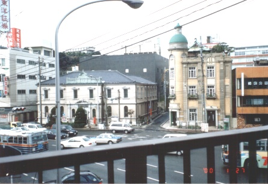
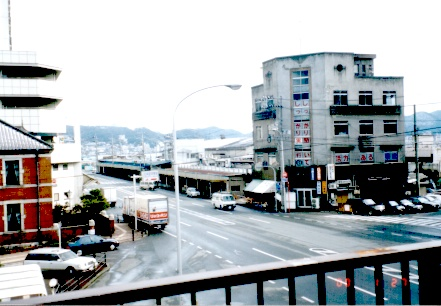
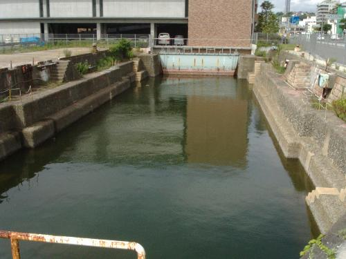
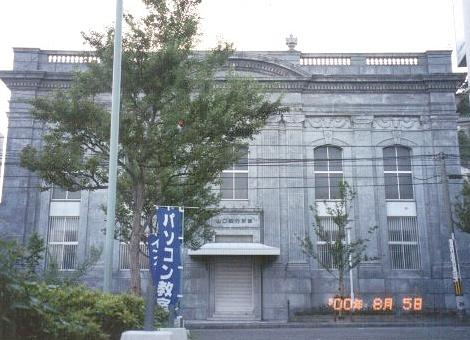
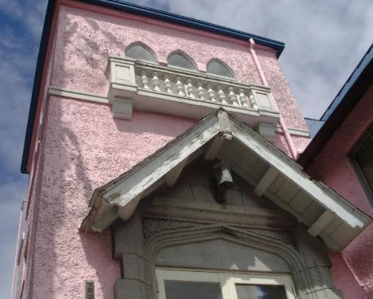

|  |  |
|  |  |
左下：関門ビル（S６）・旧唐戸魚市場（S8）⋆H13解体、 右下：旧唐戸魚市場
|  |  |
 |
 |
左下：山口県労働金庫下関支店（S9）、右下：旧下関バプテスト教会（T4）
唐戸交差点（唐戸バス停）から、下関市役所第一別館＆ロダン美容室（T13）までは徒歩約5分です。
＊その他の唐戸近代建築＊
ロダン美容室（旧ウール商会）（M40）
藤原義江記念館（旧リンガー邸）（S11）
⋆その他唐戸史跡⋆
亀山八幡宮（大鳥居、石垣）
赤間神宮（安徳天皇をお祀り、耳なし芳一像）
引接寺（三門の龍が左甚五郎の作といわれる）
日清講和記念館（料亭春帆楼）（S12）
唐戸からのアクセス
| 下関駅 | バスで７分 |
| 長府城下町（功山寺ほか） | バスで１６分（城下町長府バス停下車） |
|
壇ノ浦古戦場跡 火の山ロープウェイ乗り場 門司行き人道トンネル入り口 |
バスで５分（御裳川バス停下車） |
|
門司港駅 門司レトロ地区 （北九州市） |
渡船で５分（２０分おき就航） |